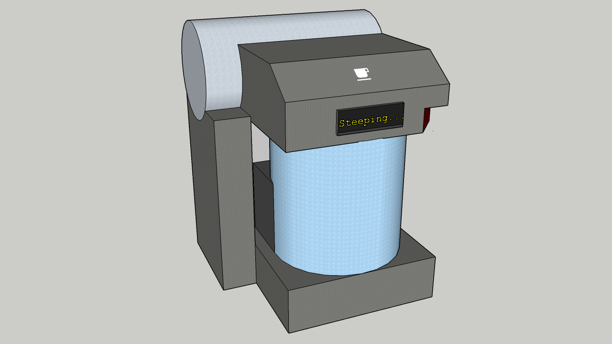

The IoTea is the newest revolution in steeping tea. Brought to you by Internet of Thugs, the IoTea uses state-of-the-art sensor technology to control the steeping process, allowing you to steep tea to precise specifications.
 Have you ever wanted to taste the tea your favorite celebri-tea or ar-tea-san drinks? Have you found the perfect steeping process you want to share with the world? The IoTea device allows you to share your favorite tea recipes with the community, and steep teas that others have shared, making you part of the global tea network.
Prepare a cup of tea, and the IoTea can take a snapshot of your brew and upload it to our global servers for other budding tea aficionados to download.
The IoTea can automatically and quickly brew your downloaded tea, be it your favourite celebrities’ or the ancient instructions of a 12th century monk. Using a mechanised cradle, the device lowers your teabag or infuser into the water, and steeps at optimal temperature until the correct strength is achieved, at which point the cradle retracts. Unlike other automatic tea-steepers, we don’t rely on timing, but rather measure the strength of the tea, so you know that with the IoTea, your cup will be the same regardless of the type of tea or amount of water.
Use our app to search for and select your tea of choice. From the humble breakfast teabag to the ancient Lu'an tea leaves of Eastern China, you'll find it in our catalogue.
Browse our user-submitted recipes and choose one you like the look of. Ever wondered how Taylor Swift drinks her tea? With the IoTea, you won't have to wonder anymore.
Your chosen recipe is downloaded to your IoTea and the steeping process begins. Our proprietary technology notifies you whe the tea has reached the desired strength and temperature, ensuring you get the perfect cup of tea, every time.
Found a tea-riffic recipe of your own? The IoTea will measure the strength and temperature of your cuppa and upload it to our global database, so you can share it with the world.
The IoTea has these compelling features to make your tea experience that bit more magical
Around 1.5bn people live high enough above sea level that the difference in air pressure affects the optimal steeping temperature of the tea. The IoTea accounts for this so you get the perfect cup no matter where you live.
Trying out a new type of tea and being unsure of how to properly steep it can be intimidating. Some teas are very temperamental, becoming bitter and unpleasant if not steeped correctly. The IoTea handles the complicated details, letting you rest easy.
Conventional tea makers fail to account for water hardness: the harder the water, the longer the time needed to steep the tea. Since the IoTea measures strength instead of relying on timing, it produces the perfect result regardless of the water.
Upload and share your favourite recipes with tea-drinkers around the world! Browse the global catalogue to see trending teas and give them your rating. You might just find the perfect cuppa.
Ever wondered what exotic teas the A-list celebrities are drinking? The IoTea's Celebri-Tea feature offers a platform for featured users to share their picks and recipes for you to download so now you, too, can feel like a star.
Rate the teas you try from our catalogue, and our intelligent algorithms will use that data to construct a list of recommendations we're sure you'll love.
I've always had problems making my tea the same every time - my IoTea manages to do it perfectly, saving me a lot of stress. I'd be lost without it!
I'm a massive tea fan. The IoTea has helped connect me to a world of other tea-lovers out there. Trying new teas is my passion and now I can do it effortlessly.'
I had NO CLUE there were so many different and exotic teas out there! IoTea has opened my eyes to a whole new world to discover. Thank you!
Yes. You will still be able to make your own tea, just not share your recipes.
No. The IoTea does not have a refrigeration device, so it can't store milk.
The IoTea is only designed to make tea.